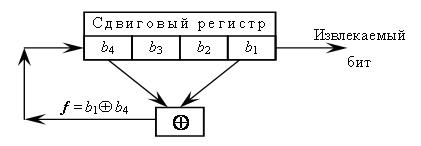

Введение
Поточный шифр (stream cipher) выполняет преобразование входного сообщения по одному биту (или байту) за операцию. Поточный алгоритм шифрования устраняет необходимость разбивать сообщение на целое число блоков достаточно большой длины, следовательно, он может работать в реальном времени. Таким образом, если передается поток символов, каждый символ может шифроваться и передаваться сразу.
Общая информация
Работа типичного поточного шифра показана на картинке справа.
Как правило в качестве генераторов ключей в поточных шифрах используются генераторы псевдослучайных чисел(ГПСЧ). Целью использования таких генераторов является получение "бесконечного" ключевого слова, располагая относительно малой длиной самого ключа. ГПСЧ создает последовательность битов, похожую на случайную. На самом деле, конечно же, такие последовательности вычисляются по определенным правилам и не являются случайными, поэтому они могут быть абсолютно точно воспроизведены как на передающей, так и на принимающей стороне. Но для использвания генератора псевдослучайных чисел в поточных шфирах, генератор должен иметь определенные свойства.
Необходмые свойства ГПСЧ для использование его в криптографии:
- период последовательности должен быть очень большой;
- порождаемая последовательность должна быть "почти" неотличима от действительно случайной;
- вероятности порождения различных значений должны быть в точности равны;
- для того, чтобы только законный получатель мог расшифровать сообщение, следует при получении потока ключевых битов ki использовать и учитывать некоторый секретный ключ, причем вычисление числа ki+1 по известным предыдущим элементам последовательности ki без знания ключа должно быть трудной задачей.
Генераторы псевдослучайных чисел на основе сдвиговых регистров с обратной связью
В теории кодирования и криптографии широко применяются так называемые сдвиговые регистры с обратной связью. Они использовались в аппаратуре шифрования еще до начала массового использования ЭВМ и современных высокоскоростных программных шифраторов. Сдвиговые регистры с обратной связью могут применяться для получения потока псевдослучайных бит. Сдвиговый регистр с обратной связью состоит из двух частей: собственно n-битного сдвигового регистра и устройства обратной связи.
Сдвиговый регистр с обратой связью.
Простейшим видом сдвигового регистра с обратной связью является линейный сдвиговый регистр с обратной связью (linear feedbackshift register – LFSR). Обратная связь в этом устройстве реализуется просто как сумма по модулю 2 всех (или некоторых) битов регистра. Биты, которые участвуют в обратной связи, образуют отводную последовательность. Линейные сдвиговые регистры с обратной связью или их модификации часто применяется в криптографии. Для того, чтобы стало понятнее, как работает сдвиговый регистр с обратной связью, рассмотрим 4-битовый LFSR с отводом от первого и четвертого разрядов, представленный на рисунке ниже.  На каждом шаге все содержимое регистра сдвигается вправо на один разряд. При этом можно получить в качестве результата один бит. На освободившееся слева место поступает бит, равный результату вычисления функции обратной связи f=b1⊕b4. Выходную последовательность генератора псевдослучайных бит образует последний столбец таблицы (извлекаемый бит).
 Линейный сдвиговый регистр размером n бит может находиться в одном из 2n-1 состояний (исключается состояние регистра из одних нулей - при появлении такого состояния далее будут порождаться лишь нули, и о псевдослучаности порождаемой последовательности говорить не приходится). Поэтому теоретически такой регистр может генерировать псевдослучайную последовательность с максимальным периодом 2n-1. Линейный сдвиговый регистр с обратной связью будет генерировать циклическую последовательность битов с максимальным периодом только при выборе в качестве отводной последовательности определенных бит. Разработана математическая теория, позволяющая выбрать подходящие номера разрядов для бит отводной последовательности.
Линейный сдвиговый регистр размером n бит может находиться в одном из 2n-1 состояний (исключается состояние регистра из одних нулей - при появлении такого состояния далее будут порождаться лишь нули, и о псевдослучаности порождаемой последовательности говорить не приходится). Поэтому теоретически такой регистр может генерировать псевдослучайную последовательность с максимальным периодом 2n-1. Линейный сдвиговый регистр с обратной связью будет генерировать циклическую последовательность битов с максимальным периодом только при выборе в качестве отводной последовательности определенных бит. Разработана математическая теория, позволяющая выбрать подходящие номера разрядов для бит отводной последовательности.
Линейные сдвиговые регистры с обратной связью часто использовались и используются до сих пор при шифровании потоков данных. Для повышения криптостойкости в таких устройствах шифрования применяются комбинации нескольких сдвиговых регистров с обратной связью, а также вводятся дополнительные перемешивающие операции. Такие электронные схемы предлагались и выпускались еще до второй мировой войны. Аналогичные принципы заложены и в некоторые поточные шифры, созданные в конце XX века, например, в алгоритм А5, использовавшийся в Европе для шифрования сотовых цифровых каналов связи стандарта GSM. Несмотря на то, что некоторые криптоаналитики высказывают сомнения в надежности алгоритмов поточного шифрования с использованием линейных сдвиговых регистров с обратной связью, они положены в основу функционирования различных военных и гражданских устройств связи, используемых до настоящего времени.
Основным недостатком генераторов псевдослучайных чисел на базе линейных сдвиговых регистров является сложность программной реализации. Сдвиги и битовые операции легко и быстро выполняются в электронной аппаратуре, поэтому в разных странах выпускаются микросхемы и устройства для поточного шифрования на базе алгоритмов с использованием сдвиговых регистров с обратной связью.
Есть несколько причин использования линейных регистров сдвига в криптографии:
Нелинейная комбинация генераторов
Генератор Геффа. В этом генераторе потока ключей используются три LFSR, объединенные нелинейным образом. Два LFSR являются входами мультиплексора, а третий LFSR управляет выходом мультиплексора. Если а1, а2 и а3 - выходы трех LFSR, выход генератора Геффа (Geffe) можно описать как:
b= a1a2 — a1a3.
Если длины LFSR равны n1 n2 и n3, соответственно, то линейная сложность генератора равна:
(n1+1)*n2+n1*n3.
Период генератора равен наименьшему общему делителю периодов трех генераторов. При условии, что степени трех примитивных многочленов обратной связи взаимно просты, период этого генератора будет равен произведению периодов трех LFSR.
Генераторы на нелинейных фильтрах
В нелинейных комбинациях генераторов и генераторах на нелинейных фильтрах перемещение данных во всех РСЛОС контролируется одним синхросигналом.
Основная идея функционирования рассматриваемого типа генераторов — внести нелинейность в работу генераторов потока ключей, основанных на РСЛОС, путём управления синхросигналом одного регистра выходной последовательностью другого.
Есть 2 типа генераторов, основанных на управлении синхросигналом:
Основная идея: РСЛОС 1 используется для управления передвижением битов двух других РСЛОС 2 и 3.
 Контролирующий регистр РСЛОС 1 используется для управления выходом РСЛОС 2.
Контролирующий регистр РСЛОС 1 используется для управления выходом РСЛОС 2.
Криптоанализ. Атаки на поточные шифры
Силовые атаки
К этому классу относятся атаки, осуществляющие полный перебор всех возможных вариантов. Сложность полного перебора зависит от количества всех возможных решений задачи (в частности, размера пространства ключей или пространства открытых текстов). Этот класс атак применим ко всем видам систем поточного шифрования. При разработке систем шифрования разработчики стремятся сделать так, чтобы этот вид атак был наиболее эффективным по сравнению с другими существующими методами взлома.
Статистические атаки
Статистические атаки делятся на два подкласса:
- метод криптоанализа статистических свойств шифрующей гаммы: направлен на изучение выходной последовательности криптосистемы; криптоаналитик пытается установить значение следующего бита последовательности с вероятностью выше вероятности случайного выбора с помощью различных статистических тестов.
- метод криптоанализа сложности последовательности: криптоаналитик пытается найти способ генерировать последовательность, аналогичную гамме, но более просто реализуемым способом.
Аналитические атаки
Этот вид атак рассматривается в предположении, что криптоаналитику известны описание генератора, открытый и соответствующий закрытый тексты. Задача криптоаналитика определить использованный ключ (начальное заполнение регистров). Виды аналитических атак, применяемые к синхронным поточным шифрам:
- корреляционные
- компромисс “время-память”
- инверсионная
- “предполагай и определяй”
- на ключевую загрузку и реинициализацию
- XSL-атака
Являются наиболее распространёнными атаками для взлома поточных шифров. Известно, что работа по вскрытию криптосистемы может быть значительно сокращена, если нелинейная функция пропускает на выход информацию о внутренних компонентах генератора. Поэтому для восстановления начального заполнения регистров корреляционные атаки исследуют корреляцию выходной последовательности шифросистемы с выходной последовательностью регистров.
Компромисс «время-память»
Цель данной атаки — восстановление исходного состояния регистра сдвига (нахождение ключа), используя известную схему устройства и фрагмент шифрующей последовательности. Сложность атаки зависит от размера шифра и длины перехваченной гаммы.
Состоит из двух этапов:
«Предполагай и определяй»
Атака основывается на предположении, что криптоаналитику известны гамма, полином обратной связи, количество сдвигов регистра между выходами схемы и фильтрующая функция.
Состоит из трёх этапов:
Алгоритм А5
А5 — это поточный алгоритм шифрования, используемый для обеспечения конфиденциальности передаваемых данных между телефоном и базовой станцией в европейской системе мобильной цифровой связи GSM (Groupe Spécial Mobile). Шифр основан на побитовом сложении по модулю два (булева операция «исключающее или») генерируемой псевдослучайной последовательности и шифруемой информации. В A5 псевдослучайная последовательность реализуется на основе трёх линейных регистров сдвига с обратной связью. Регистры имеют длины 19, 22 и 23 бита соответственно. Сдвигами управляет специальная схема, организующая на каждом шаге смещение как минимум двух регистров, что приводит к их неравномерному движению. Последовательность формируется путём операции «исключающее или» над выходными битами регистров. Изначально французскими военными специалистами-криптографами был разработан поточный шифр для использования исключительно в военных целях. В конце 80-х для стандарта GSM потребовалось создание новой, современной системы безопасности. В её основу легли три секретных алгоритма: аутентификации — A3, шифрования потока — A5, генерации сеансового ключа — А8. В качестве алгоритма A5 была использована французская разработка. Этот шифр обеспечивал достаточно хорошую защищённость потока и, следовательно, конфиденциальность разговора. Изначально экспорт стандарта из Европы не предполагался, но вскоре в этом появилась необходимость. Именно поэтому А5 переименовали в А5/1 и стали распространять как в Европе, так и в США. Для остальных стран (в том числе и России) алгоритм модифицировали, значительно понизив криптостойкость шифра. А5/2 был специально разработан как экспортный вариант для стран, не входивших в Евросоюз. Криптостойкость А5/2 была понижена добавлением ещё одного регистра (17 бит), управляющего сдвигами остальных. В А5/0 шифрование отсутствует совсем. В настоящее время разработан также алгоритм А5/3, основанный на алгоритме Касуми и утверждённый для использования в сетях 3G. Эти модификации обозначают как A5/x.Алгоритм A5 в настоящее время — это целое семейство шифров. Для описания возьмем А5/1, как родоначальника этого семейства. Изменения в производных алгоритмах опишем отдельно.
В этом алгоритме каждому символу открытого текста соответствует символ шифротекста. Текст не делится на блоки (как в блочном шифровании) и не изменяется в размере. Для упрощения аппаратной реализации и, следовательно, увеличения быстродействия используются только простейшие операции: сложение по модулю 2 (XOR) и сдвиг регистра. Формирование выходной последовательности происходит путём сложения потока исходного текста с генерируемой последовательностью (гаммой). Особенность операции XOR заключается в том, что применённая чётное число раз, она приводит к начальному значению. Отсюда, декодирование сообщения происходит путём сложения шифротекста с известной последовательностью. Таким образом, безопасность системы полностью зависит от свойств последовательности. В идеальном случае каждый бит гаммы — это независимая случайная величина, и сама последовательность является случайной. Такая схема была изобретена Вернамом в 1917 году и названа в его честь. Как доказал Клод Шеннон в 1949 году, это обеспечивает абсолютную криптостойкость. Но использование случайной последовательности означает передачу по защищённому каналу сообщения, равного по объёму открытому тексту, что значительно усложняет задачу и практически нигде не используется. В реальных системах создаётся ключ заданного размера, который без труда передаётся по закрытому каналу. Последовательность генерируется на его основе и является псевдослучайной. Большой класс поточных шифров (в том числе A5) составляют шифры, генератор псевдослучайной последовательности которой основан на регистрах сдвига с линейной обратной связью.
Сам по себе РСЛОС легко поддаётся криптоанализу и не является достаточно надёжным для использования в шифровании. Практическое применение имеют системы регистров переменного тактирования с различными длинами и функциями обратной связи.
Структура алгоритма А5 выглядит следующим образом:
- Три регистра(R1, R2, R3) имеют длины 19, 22 и 23 бита
- Многочлены обратных связей:

- Управление тактированием осуществляется специальным механизмом:
- в каждом регистре есть биты синхронизации: 8 (R1), 10 (R2), 10 (R3);
- вычисляется функция F = x&y|x&z|y&z, где & — булево AND, | - булево OR, а x, y и z — биты синхронизации R1, R2 и R3 соответственно;
- сдвигаются только те регистры, у которых бит синхронизации равен F;
- фактически, сдвигаются регистры, синхробит которых принадлежит большинству;
- Выходной бит системы — результат операции XOR над выходными битами регистров.
Функционирование алгоритма А5
Рассмотрим особенности функционирования алгоритма на основе известной схемы. Передача данных осуществляется в структурированном виде — с разбивкой на кадры (114 бит). Перед инициализацией регистры обнуляются, на вход алгоритма поступают сеансовый ключ (K — 64 бита), сформированный А8, и номер кадра (Fn — 22 бита). Далее последовательно выполняются следующие действия:
- Инициализация:
- 64 такта, при которых очередной бит ключа XOR-ится с младшим битом каждого регистра, регистры при этом сдвигаются на каждом такте;
- аналогичные 22 такта, только операция XOR производится с номером кадра;
- 100 тактов с управлением сдвигами регистров, но без генерации последовательности;
- 228 (114 + 114) тактов рабочие, происходит шифрование передаваемого кадра (первые 114 бит) и дешифрование (последние 114 бит) принимаемого;
- далее инициализация производится заново, используется новый номер кадра.
Криптостойкость
Разработка стандарта GSM подразумевала мощный аппарат шифрования, не поддающийся взлому (особенно в реальном времени). Используемые разработки при надлежащей реализации обеспечивали качественное шифрование передаваемых данных. Именно такую информацию можно получить от компаний, распространяющих этот стандарт. Но стоит отметить важный нюанс: прослушивание разговоров — неотъемлемый атрибут, используемый спецслужбами. Они были заинтересованы в возможности прослушивания телефонных разговоров для своих целей. Таким образом, в алгоритм были внесены изменения, дающие возможность взлома за приемлемое время. Помимо этого, для экспорта A5 модифицировали в A5/2. В MoU (Memorandum of Understand Group Special Mobile standard) признают, что целью разработки A5/2 было понижение криптостойкости шифрования, однако в официальных результатах тестирования говорится, что неизвестно о каких-либо недостатках алгоритма.
Известные уязвимости
С появлением данных о стандарте A5 начались попытки взлома алгоритма, а также поиска уязвимостей. Огромную роль оказали особенности стандарта, резко ослабляющие защиту, а именно:
- 10 бит ключа принудительно занулены;
- отсутствие перекрестных связей между регистрами (кроме управления сдвигами);
- шифрование служебной информации, известной криптоаналитику;
- свыше 40 % ключей приводит к минимальной длине периода генерируемой последовательности, а именно (4/3)*(223-1)
- в начале сеанса осуществляется обмен нулевыми сообщениями (по одному кадру);
- одинаковое дополнение (padding) для всех пакетов;
- в A5/2 движение осуществляется отдельным регистром длиной 17 бит.
Известные атаки
Ключом является сеансовый ключ длиной 64 бита, номер кадра считается известным. Таким образом, сложность атаки, основанной на прямом переборе, равна 264. Первые обзоры шифра (работа Росса Андерсона) сразу выявили уязвимость алгоритма — из-за уменьшения эффективной длины ключа (зануление 10 бит) сложность упала до 245 (сразу на 6 порядков). Атака Андерсона основана на предположении о начальном заполнении коротких регистров и по выходным данным получения заполнения третьего. В 1997 году Йован Голич опубликовал результаты анализа А5. Он предложил способ определения первоначального заполнения регистров по известному отрезку гаммы длиной всего 64 бита. Этот отрезок получают из нулевых сообщений. Атака имеет среднюю сложность 240. В 1999 году Вагнеру и Голдбергу без труда удалось продемонстрировать, что для вскрытия системы достаточно перебором определить начальное заполнение R4. Проверка осуществляется за счёт нулевых кадров. Сложность этой атаки равна 217, таким образом, на современном компьютере вскрытие шифра занимает несколько секунд. В декабре 1999 года группа израильских учёных (Ади Шамир, Алекс Бирюков, а позже и американец Дэвид Вагнер (англ.)) опубликовали весьма нетривиальный, но теоретически очень эффективный метод вскрытия A5/1:
Это весьма сложная идея, реализуя которую мы наступаем на многих фронтах, чтобы накопить несколько небольших преимуществ, но сложенные все вместе, они дают большой выигрыш.